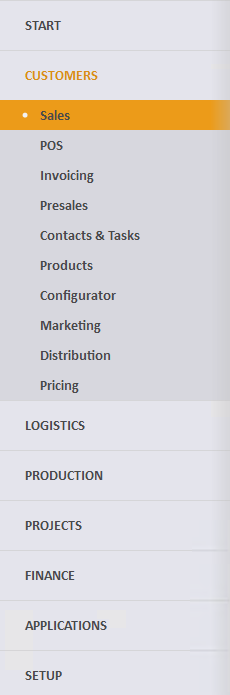
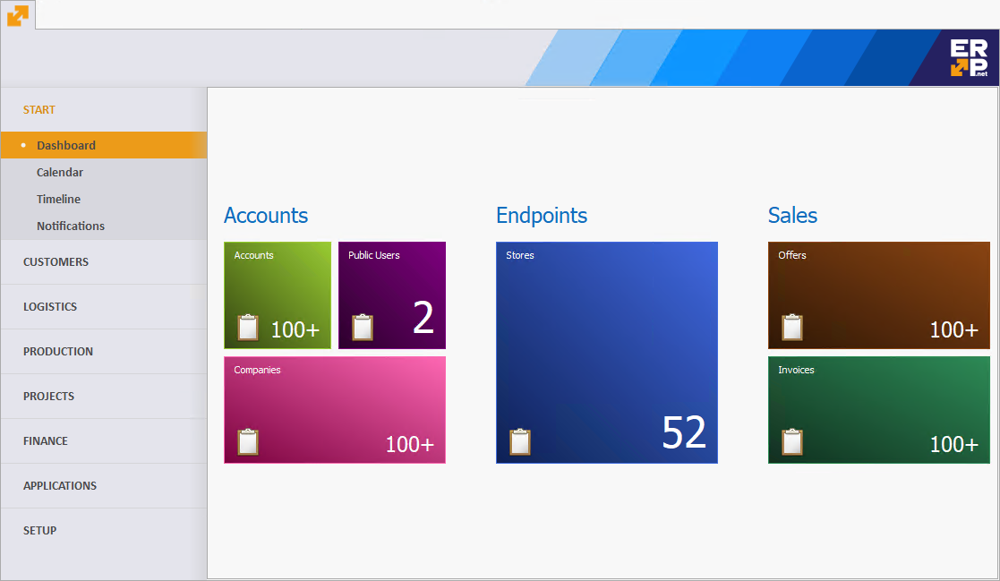

Main menu
The Main menu is the default page that will open after starting the ERP.net Windows Desktop Client. Using it, you can easily
navigate between the different modules or to open navigators and documents. You have access to it at any time through
the ERP.net Windows Desktop Client icon  .
.

Note
According to your security access level and settings you will only see the sections you have access to.
Menu navigation
On the left you will see the menu navigation, containing the different application sections. For convenience, they are grouped into several top-level groups (also called tabs):
START- provides fast access for commonly used pages which summarize data.- Main program modules. Each one in a separate group.
SETUP- workflow, system and application specific tuning.
Each group contains the actual application sections. When you click on a group, it will expand and its available
sections (i.e. modules) will appear. You can see in the picture below- the CUSTOMERS group is selected and its related
modules are shown beneath.

Note
When you start ERP.net Windows Desktop Client for the first time, you will see the first module opened by default
(CUSTOMERS->SALES, according to the picture above). Each following time the application will
remember the last used module and will select it automatically after start.
Menu page
On the right you can see the rest of the page- the contents of the selected module from the navigation. The content is usually divided into three subsections:
- Documents
- Reports
- Definitions
Below each subsection there is list of links, which represent specific actions in the context of the selected module.
E.g. you can open a Navigator, create a new document or open a specific report.

START
START is the first available group in the menu navigation. It differs from the other groups in the following aspects:
- It doesn't contain application modules, but direct links to the most commonly used summarization panels.
- It is fully customizable! You have a set of possible panel types and you can choose which ones will be included.
- Each panel opens in the same page. You don't need to switch between different tabs.

Due to the fact that the Main Menu supports Views, you can customize the contents of the START group.
From the list with available panels you can select the ones you wish to be part of the START.
Note
If there are no visible panels, the START group will be empty and therefore will not be displayed.
For more information how to customize a View, please check out our separate docs topic:
Customize the workspace / Working with views.
In addition to the customization, some panels content depends on the View, of which is part of. An example for this
is the Dashboard panel. You can create multiple views with totally different set of tiles for each Dashboard. It
will be restored the way you configured it each time you change the current View.
In contrast, some other panels don't work this way. E.g. the Timeline- will show its content, regardless of the current View and
any other customizations.
Note
When ERP.net Windows Desktop Client starts for the first time, the START group will not show. This is because
by default there are no visible panels. They need to be configured initially in the way you want.